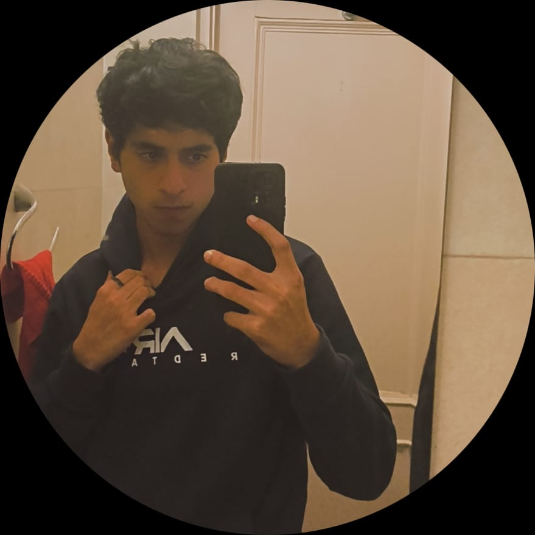

Hi, I am Siddharth Dhadwal and I am a Computer Science student at SRM University.
The fields where I specialize are:

About
I am a passionate computer science student dedicated to exploring the ever-evolving landscape of
technology and innovation. With a solid foundation in programming, algorithms, and software development, I
thrive on solving complex problems and building efficient, scalable solutions. My academic journey is
complemented by hands-on experience in projects involving web development, artificial intelligence, and data
analysis. Driven by curiosity and a love for learning, I am eager to contribute to cutting-edge advancements
in the tech industry while continuously honing my skills and expanding my knowledge.
Skills
Experience
Education
- Deep Learning
Computer Vision - Python
Machine Learning - Data Analytics
Data Science
- June 2024-July 2024
AI/ML Intern at Food Corporation Of India - March 2024-April 2024
Data Science Intern at CodersCave - June 2024-July 2024
Web Development Intern at BharatIntern
- 1st-12th
St Edwards School, Shimla - BTech
SRM University KTR
My Projects
AI Attendance System
6th Semester
Minor Project
AI Career Counselor(in progress)
7th Semester
Personal Project
Football Match Prediction Model
7th Semester
Personal Project